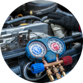

Заправка
Здійснюємо діагностику і заправку автокондиціонерів за

Про нас
Наша компанія є провідним постачальником послуг з заправки автокондиціонерів. Ми спеціалізуємося на обслуговуванні систем кондиціонування автомобілів різних марок і моделей.
Ми пропонуємо широкий спектр послуг, які включають заправку автокондиціонерів, діагностику системи, пошук несправностей, а також профілактичне обслуговування.
“AVTOCLIMAT” здійснює діагностику і заправку автокондиціонерів за доступними цінами в Житомирі. Ми дотримуємся суворих технічних рекомендацій та високих стандартів якості у виконанні обслуговування, працюємо з урахуванням особливостей автомобіля і увагою до кожного клієнта. Ми використовуємо сучасну автоматичну машину для заправки із вбудованою базою автомобілів. обладнання ARERA LIGHT.
Чому варто обрати саме нас?
Послуги

Діагностіка та консультація
Діагностіка системи
автокондиціонування обладнанням.
200 грн
Записатися
Корисно знати
Як часто потрібно заправлять кондиціонер?
Частота заправки автокондиціонера може залежати від кількох факторів, таких як вік автомобіля, стан системи кондиціонування повітря, рівень холодоагента та його втрати. Загалом рекомендується проводити повторну заправку кожні 1-2 роки.
Однак, якщо ви помічаєте, що автокондиціонер працює менш ефективно або не охолоджує повітря належним чином, це може бути ознакою низького рівня холодоагента або присутності витоку. В такому випадку рекомендується перевірити систему кондиціонування повітря у спеціаліста.
Також, якщо ви замітили будь-які незвичні звуки або запахи, це також може вказувати на проблеми з автокондиціонером, які потребують ремонту або обслуговування.
Отже, регулярна перевірка автокондиціонера та заправка проводяться кожні 1-2 роки, але якщо виникають проблеми з його роботою, краще звернутися до кваліфікованого спеціаліста для діагностики та вирішення проблеми.
Як проходить заправка кондиціонера?
Контакти
Ми можемо зв’язатися з вами.
Відправте запит і ми зв’яжемося з вами протягом
10 хвилин. Ви можете записатися або просто
запитати, що вас цікавить.